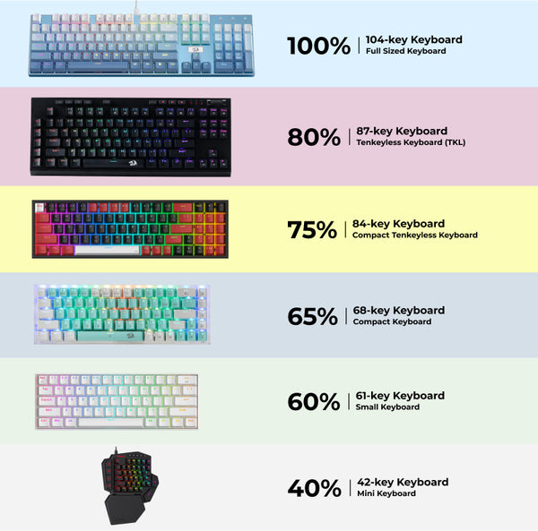
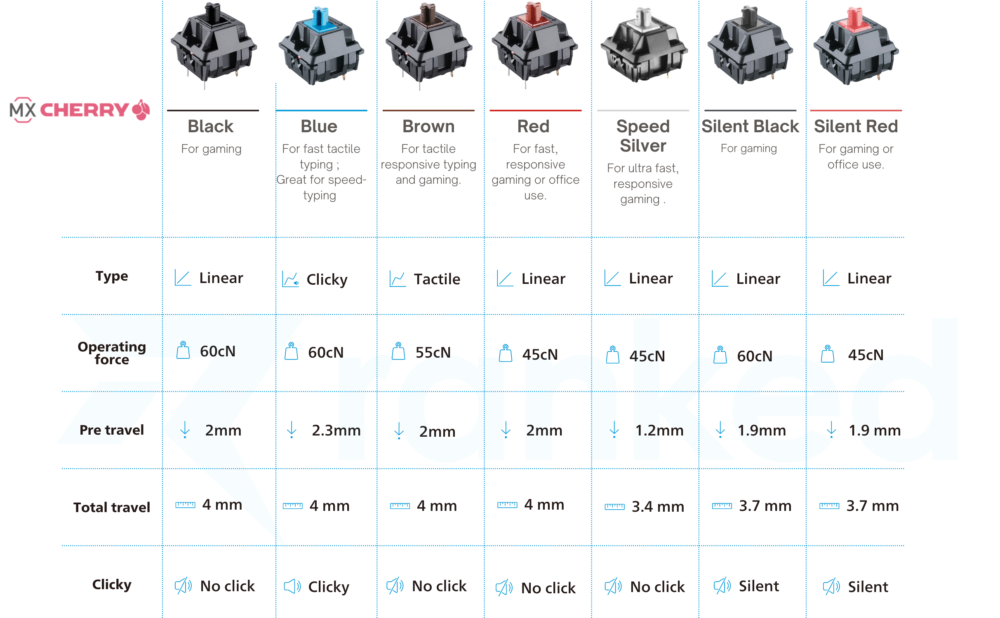
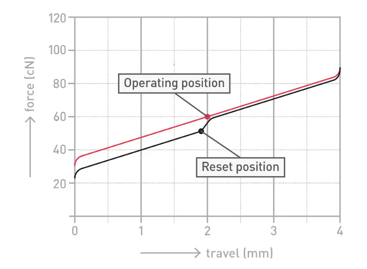
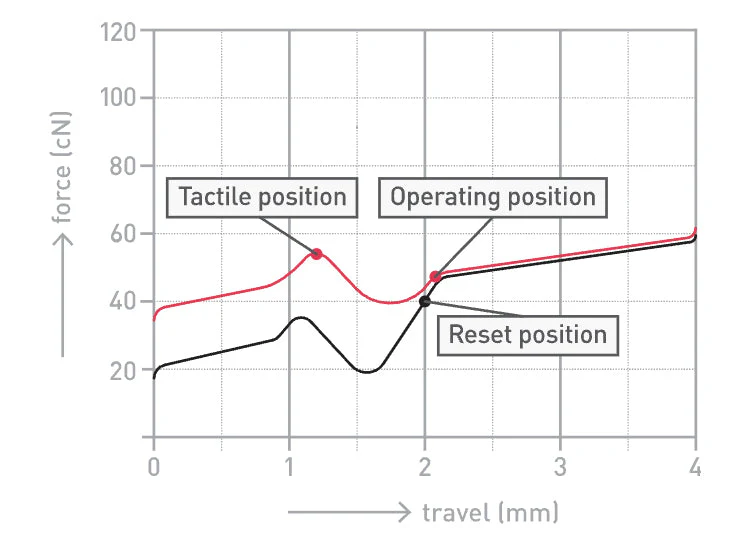
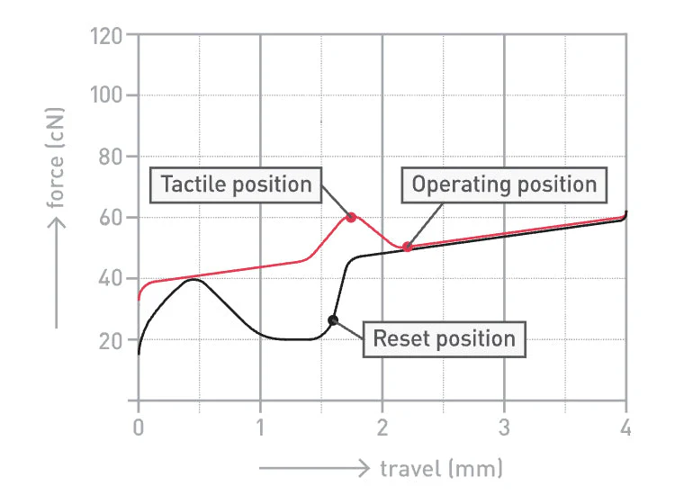
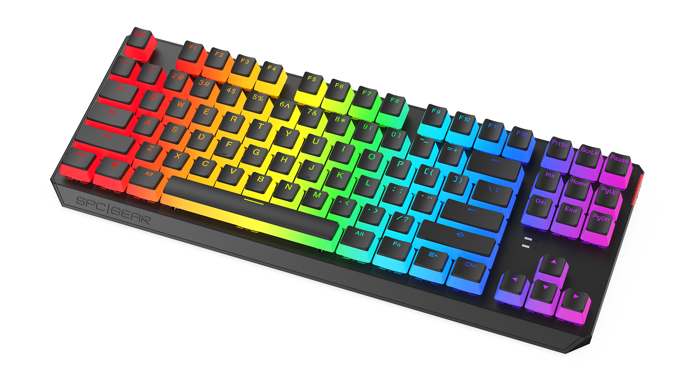

Ich bin kein profi! Das hier ist alles aus meinem eigenen Wissen.. manche Dinge sind vielleicht komisch oder falsch beschrieben, nagel mich darauf bitti nicht fest :(
Ausserdem ich bin unfähig im schreiben und wahrscheinlich gibt es wieder Arsch viele Rechtschreibfehler.. naja.
Also, es gibt extrem viele verschiedene Tastaturen. Hater würden sagen, dass es alles das gleiche wäre, aber nein! Man kann sich auch mehr gedanken über Tastaturen machen und sie können sich auch gut anfühlen!
Zwei große Kategorien von Tastaturen
Membran Tastaturen
Membran-Tastaturen sind basically das, was die meisten Leute benutzen, ohne jemals darüber nachzudenken. Gut möglich, dass deine Tastatur auf Arbeit auch eine Membran-Tastatur ist, wobei du ja von dem "clicky" sound geredet hast! Dazu kommen wir gleich.
Unter den Tasten ist keine einzelne Mechanik, sondern so eine Gummi- bzw. Silikon-Schicht. Wenn du eine Taste drückst, wird diese Schicht runtergedrückt und registriert den Input.
Das ist günstig, relativ leise und funktioniert komplett fine…
fühlt sich aber oft ein bisschen „matschig“ an.
Hier eine coole Grafik, die ich aus dem Internet geklaut habe:

Eben kein eigener Mechanismus für jede Taste sondern eine Silikon-Schicht :o
Mechanische Tastaturen
ber jetzt die wirklich spannende Tastaturen-Gattung!!
Wie der Name schon sagt, hat hier jede Taste ihren eigenen Mechanismus.
Keine Gummi-Schicht mehr, sondern ein sogenannter „Switch“. Es gibt sehr viele Arten von Switches (du siehst: die Kacke kriegt immer mehr Unterkategorien), aber dazu kommen wir gleich.
Jede Taste fühlt sich dadurch bewusst an. Nicht einfach nur drücken → fertig, sondern da passiert wirklich was unter deinem Finger… und ganz ehrlich, das spürt man.
Fass mal eine billige Laptop-Tastatur an und dann eine etwas teurere mechanische – das ist ein riesiger Unterschied.
Andere Menschen reden davon, dass Verbrenner-Motoren sich geil anfühlen… aber nein.
Das wirklich Geile sind hochwertige Tastaturen. (Fick Autos btw)
Tastaturen-Formate
Okay.. bevor wir über Switches reden, müssen wir kurz über die Größe von Tastaturen reden!
Vielleicht hätte ich das auch einfach vorher machen sollen… aber egal.
Also basically: wie viele Tasten drauf sind und wie viel Platz die Tastatur auf deinem Tisch einnimmt.
Die „normale“ Tastatur, die du wahrscheinlich kennst, ist eine 100% Tastatur.
Die hat alles: Buchstaben, Zahlenreihe, F-Tasten und das Numpad rechts (was du ja sooo liebst).
Dann gibt es kleinere Versionen davon, zum Beispiel:
80% (oder TKL = Tenkeyless) → alles außer dem Numpad
60% → noch kompakter, ohne F-Tasten und Pfeiltasten als eigene Keys
Und dann gibt es noch ganz wilde Sachen… 40% Tastaturen, wo gefühlt einfach die Hälfte fehlt.
Irgendwann benutzt du dann Tastenkombinationen für Dinge, die früher einfach eine eigene Taste hatten… aber hey.
Warum macht man das?
Mehr Platz auf dem Tisch, cleaner Look… und ja, ein bisschen auch, weil es cool aussieht.
(und weil die alle epic gamer sind!!)
Hier nochmal eine freshe Grafik (aus dem Internet geklaut… kann man eigentlich für sowas angezeigt werden?):

Keyboard Switches!!
Jetzt wird es richtig nerdig und ich liebs! Ich muss hier gleich meine geklaute Grafik rausholen:

Okay… diese Tabelle sieht erstmal schlimmer aus, als sie ist.
Generell werden Switches nämlich nach Farben kategorisiert.
Auf der Grafik siehst du Switches von Cherry MX (einer der bekanntesten Hersteller).
Die Farben und Namen sind zwar von Hersteller zu Hersteller ein bisschen unterschiedlich, aber das Grundprinzip ist immer ähnlich. Wir bleiben einfach mal bei Cherry MX, damit es nicht komplett eskaliert.
Linear
Zum Beispiel Cherry MX Black oder Red.
Das ist so der basic all-rounder. Du klickst den Key und du hast immer den gleichen Widerstand - eben linear. Generell sind die eigentlich für jede Situation gut, aber auch ein bisschen lame, wie ich finde :)

Tactile
Zum Beispiel Cherry MX Brown oder Clear.
Tactile heisst, dass sich der Widerstand während dem klicken verändert. Also am Anfang bleibt der Widerstand noch gleichmässig, dann wird er kurz stärker, dann wird er schwächer und wieder stärker :o
Klingt komplizierter als es ist.. versprochen.

Clicky (yep, die heissen wirklich so)
Zum Beispiel Cherry MX Blue oder Green.
Diese Switches sind basically wie die tactile Switches, nur das sie noch extra ein Plastikteil eingebaut, das mit jedem mal einen lauten "click" Sound macht!
Beim schreiben kann das schon geil sein, aber die können auch ein bisschen anstrengend sein, bin ich ehrlich.

Checke Keychron für mehr Infos btw :D
Sehr nerdig, ich liebs.
Keycaps
Keycaps sind einfach die „Kappen“ auf den Switches, also das, was du tatsächlich mit deinen Fingern berührst.
Klingt erstmal komplett uninteressant… ist es auch ein bisschen... aber auch cool!
Weil hier fängt es an, dass Tastaturen plötzlich nicht mehr nur funktional sind, sondern auch irgendwie… ästhetisch.
Farben, Designs, Fonts - du kannst deine Tastatur basically komplett so aussehen lassen, wie du willst.
ABS vs. PBT
Oder um es noch nerdiger zu machen: Acrylonitrile butadiene styrene versus Polybutylene terephthalate.
ABS Keycaps sind in der Herstellung billiger und werden eben bei den meisten sehr günstigen Tastaturen verwendet.
Generell fühlen die sich halt einfach "speckiger" an und sie nutzen sich sehr schnell ab.
PBT Keycaps hingegen sind einfach premium! Fühlt sich irgendwie rauer an (aber das ist gut, vertrau) und sie nutzen sich nicht so eklig ab!
Und das aller wichtigste: Sie sind im ganzen gegossen! Das heißt die Buchstaben sind nicht einfach aufgedruckt, was bedeutet, dass sie sich nicht einfach abrubeln uuuuund die Buchstaben selbst können auch aus einem durchsichtigen Material bestehen also shiny Lichter :D
Custom Keyboards
Okay, das waren ja schon einige Optionen jetzt! Tja, es wird noch wilder.
Es gibt Leute, die kaufen nicht einfach eine fertige Tastatur, sondern alle einzelnen Teile separat und bauen sich die Tastaturen selbst zusammen.
Also wirklich alles:
- das Gehäuse (Case),
- die Platine (PCB),
- die Switches,
- die Keycaps...
Und dann man hat man für sehr teuer eine komplett eigene Tastatur!
Eigenes Design, eigenes Tipp-Gefühl uuuund eigener Sound! Und bei Sound wird es richtig wild...
Sound
Leute suchen sich ihre Tastaturen nicht nur anhand des aussehens aus, sondern auch am Sound!
Clicky Switches sind dabei nur der Anfang! Denn alles kann den Sound beeinflussen.
Switches, Keycaps, Gehäuse, ob Schaumstoff drin ist, wie du die Tastatur gebaut hast… basically jede einzelne Entscheidung, die du jemals getroffen hast (aber kein Druck).
Und was es noch wilder macht: Lubing.
Leute schmieren jeden einzelnen Switch. Extrem aufwendig, aber anscheinend macht das einen großen Unterschied.
Wenn du mal echt Langeweile hast such mal nach Keyboard Sound Vergleichen auf YouTube und dann lernst du auch von den tollen Begriffen Creamy, Thocky, Clacky, Poppy und Clicky :D
Meine Tastatur
Tja, wenn ich so viel von Tastaturen yappe, muss ich ja auch eine fancy Tastatur haben... Naja.
Also Meine Tastatur ist nicht schlecht, aber jetzt, wo du alle Optionen kennst, ist sie jetzt nicht so crazy.
SPC Gear GK630K Tournament Kailh Brown RGB Pudding Edition
(Yep, Tastaturen Namen sind crazy)

Es ist eine 80% Tastatur mit Brown tactile switches vom Hersteller Kailh. PBT Keycaps (mhm!) im US Layout (QWERTY) und eben diesem Pudding Look.
So im nachhinein finde ich die schon ein bisschen cringe bin ich ehrlich, aber naja.
Irgendwann habe ich supi viel Geld und dann baue ich mir auch meine eigene Tastatur!
Kannst natürlich auch mehr Infos zu meiner Tastatur bei SPC Gear lesen! Warum auch immer du das wollen würdest.. wobei du hast dir ja auch diese kacke durchgelesen... hmm